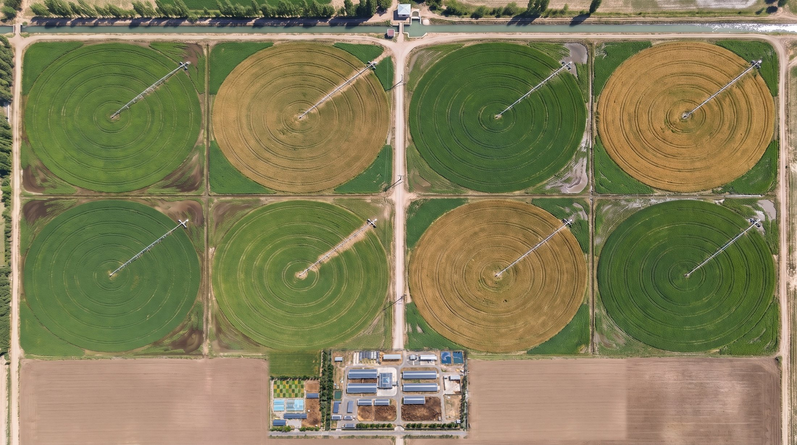
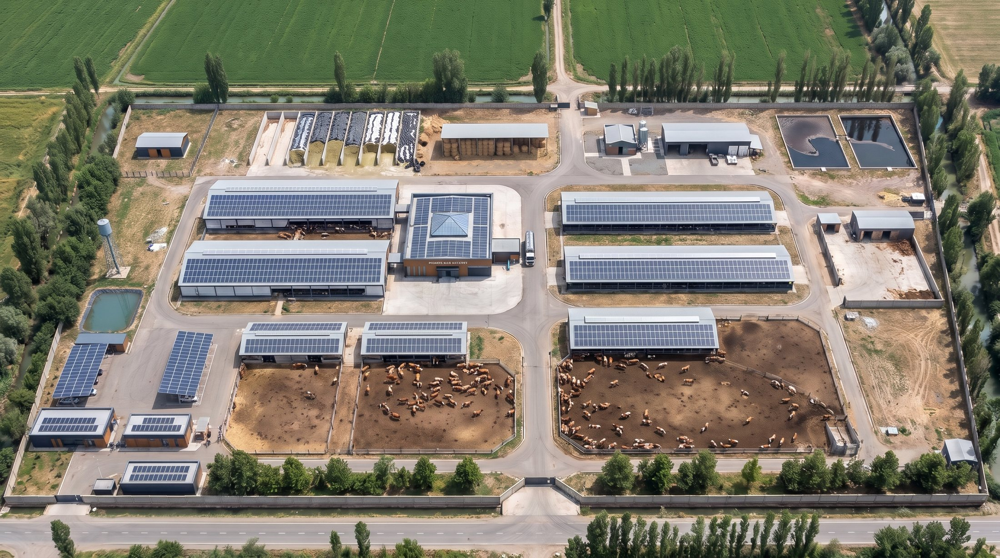
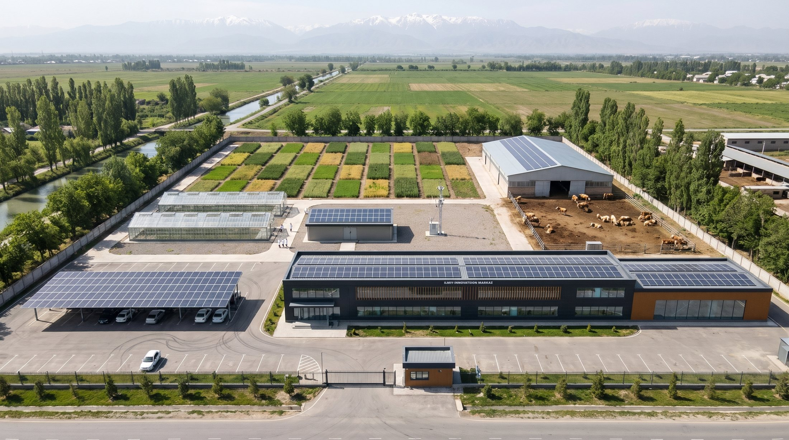
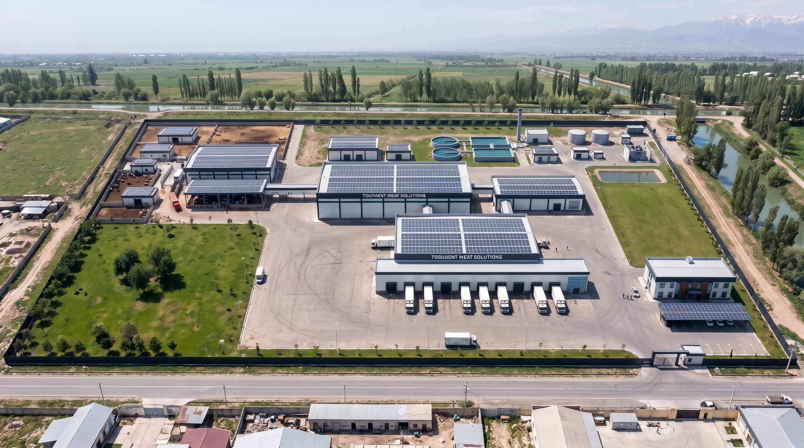

Экинзордан тайёр гўштгача битта кластерда
Тошкент вилоятида 431,56 гектарда барпо этиладиган интеграциялашган гўшт кластери: ўз озуқаси, Симментал зотли наслли подаси, наслчилик ва экинлар бўйича илмий маркази, замонавий кушхонаси ва 3 000 тонналик музлатгичи.
Симментал зотли 400 сигир, 600 ғунажин, 160 бузоқ ва 240 бўрдоқи.
- Ер майдони
- 431,56 га
- Наслли пода
- 400 сигир
- Гўшт ишлаб чиқариш
- 7 830 т/йил
- Музлатгич
- 3 000 т
- Томлардаги қуёш панеллари
- ≈ 4,5 МВт
- Иш ўринлари
- ≈ 490
Кластер қандай ишлайди
Экинзор, ферма ва илмий марказ битта яхлит массивда жойлашган: озуқа ва гўнг ташиш масофаси қисқа, тадқиқот натижалари шу ернинг ўзида синалади. Кушхона ва музлатгич алоҳида, шаҳар яқинидаги саноат зонасида, фермадан камида 1 000 метр узоқликда — бу гўшт саноати ва биологик хавфсизлик талаби. Кушхона хомашёсининг асосий қисми фермерлар ва чорвачилик кластерларидан харид қилинади.
1
Экинзор, 400 гектар
Экинзор саккизта 50 гектарлик далага бўлинган. Ҳар бир далада радиуси 345 метр бўлган айланма суғориш машинаси ишлайди; сув магистрал каналдан насос станцияси ва босимли қувур орқали берилади. Бу ерда фермага керакли асосий озуқа етиштирилади.
Нега квадрат далада айланма машина
- Машина марказдаги қўзғалмас таянч атрофида айланади: сув ва электр марказга ер остидан битта қувур ва кабел билан келади. Шунинг учун у айлана чизади — бу машинанинг ишлаш тамойили.
- Айлана ҳар бир даланинг 37,4 гектарини (74,8%) суғоради. Бурчаклардаги 95,2 гектар кўп йиллик беда учун эгатлаб суғорилади.
- Айланма машинада сув бериш самарадорлиги 75–90%, эгатлаб суғоришда 45–65%. Бир хил ҳосил учун қарийб 30% кам сув сарфланади, ҳисоб бўйича йилига ≈ 0,96 млн м³ сув тежалади.
- Бир оператор саккизта машинани масофадан бошқаради, ўғит сув билан берилади, ерни лазер билан текислаш шарт эмас.
- Сув тежовчи технологиялар давлат томонидан рағбатлантирилади, 2027 йилдан эса уларни қўлламаслик сув солиғини оширади.
Экинлар таркиби
| Беда, пичан учун (4–5 ўрим) | 140 га, 12 т/га |
|---|---|
| Маккажўхори силос учун | 100 га, 45 т/га |
| Кузги арпа (дон ва сомон) | 160 га, 5 + 3 т/га |
| Такрорий маккажўхори (арпадан кейин) | 120 га, 35 т/га |
| Озуқа жами | ≈ 11 700 т/йил |
Батафсил асосланиш ва тўрт вариант таққослови — 13-варақда.
2
Наслли ферма, 15 гектар
Ферма экинзорнинг жанубий четида жойлашган. Бу ерда сут ва гўшт йўналишидаги Симментал зотли қорамол боқилади. Тоза оқим (озуқа, сут) ва ифлос оқим (гўнг) алоҳида дарвоза ва йўллардан юради, ходимлар фермага фақат санитария ўтказгичи орқали киради.
Пода
| Сигирлар | 400 (360 соғиладиган, 40 қуруқ) |
|---|---|
| Ғунажинлар | 600 жой |
| Бузоқлар | 160 жой |
| Бўрдоқи | 240 жой, йилига ≈ 360 бош |
| Товар сут | ≈ 7,3 т/сутка, ≈ 2 660 т/йил |
| Кушхонага | бўрдоқи ва брак сигирлар ≈ 440 бош/йил |
Бинолар
| Сигирхоналар | 2 та, 72 × 30 м, 200 боксдан |
|---|---|
| Соғиш зали | ташқи карусель, 40 жой, соатига 240–300 сигир |
| Сут хонаси | 2 × 15 000 л, +4 °C гача совитиш |
| Ғунажинхоналар | 2 та, 96 × 24 м, 300 жойдан |
| Бўрдоқи блоки | 60 × 24 м, 240 жой |
| Бузоқхона | 54 × 18 м, 160 жой |
| Озуқа зонаси | 7 та силос траншеяси, пичан ва дон омбори |
| Гўнг | сепаратор ва 2 та ёпиқ лагуна, 180 кунлик захира |
Илмий-инновацион марказ, 4 гектар
Марказ ферманинг олд томонида, жануби-ғарбий дарвоза ёнида, автомобил йўли бўйида жойлашади. Асосий вазифаси — наслчилик ва экинларни ўрганиш, янгиликларни шу ернинг ўзида ферма ва экинзорда синаш ва фермерларга етказиш.
Наслчилик
- Геномик баҳолаш ва наслни танлаш (ДНК чиплар ёрдамида).
- Сунъий уруғлантириш ва эмбрион кўчириб ўтказиш; уруғ ва эмбрионлар криобанки.
- Сут ва озуқа сифати таҳлили, 40 бошлик тажриба молхонасида озиқлантириш тажрибалари.
- Ветеринария диагностикаси.
Деҳқончилик
- Тупроқ ва агрокимё таҳлили.
- Селекция ва уруғчилик: 2 та иссиқхона ва 40 та тажриба далачаси.
- Суғориш тажрибалари: томчилатиб ва айланма суғоришни таққослаш.
- Метеостанция, дрон ва сунъий йўлдош орқали мониторинг.
Бинолар ва ресурслар
| Илмий-лаборатория биноси | 2 қават, 66 × 18 м |
|---|---|
| Ўқув-конференция зали | 120 ўрин, фермерлар учун |
| Иссиқхоналар | 2 та, 40 × 12 м |
| Тажриба далачалари | 40 та, 0,84 га |
| Тажриба молхонаси | 40 бош, 48 × 18 м, 20 та озиқлантириш станцияси |
| Томлардаги қуёш панеллари | ≈ 0,47 МВт, йилига ≈ 0,66 ГВт·соат |
| Ходимлар | 35: мутахассислар 16, лаборантлар 8, ишчилар 5, маъмурият 4, ўқув маркази ва IT 2 |
| Инвестиция | ≈ 4,4 млн $ (тахмин) |
| Йиллик харажат | ≈ 0,6 млн $: иш ҳақи ≈ 0,37, реактив ва синовлар ≈ 0,22 |
ДНК генотиплаш ташқи лабораторияда бажарилади (50K тест 39–41 $), шунинг учун қиммат сканер сотиб олинмайди. Инвестиция ҳисоби (4,40 млн $) 20-варақда ва «Харажатлар» бўлимида; 12-варақдаги кўрсаткичларга ҳали киритилмаган.
3
Кушхона ва музлатгич, 12,56 гектар
Мажмуа (400 × 314 м) шаҳар яқинидаги саноат зонасида, магистрал йўл бўйида. Чорва ғарбдан киради, тайёр маҳсулот эса ёпиқ галереялар орқали қайта ишлаш цехи ва музлатгичга ўтади: ифлос ва тоза оқимлар кесишмайди.
Ишлаб чиқариш
| Кушхона | сменада 100 бош қорамол ва 300 бош қўй-эчки |
|---|---|
| Гўшт | 8 700 т/йил (100%), барқарор йилда 7 830 т |
| Сўйиш | ҳалол талаблари асосида |
| Қайта ишлаш цехи | гўштнинг ≈ 35%: вакуум қадоқли бўлаклар, қийма, ярим тайёр маҳсулот |
| Хомашё | йилига ≈ 26 600 қорамол ва 81 000 қўй-эчки |
Совитиш ва муҳандислик
| Музлатгич | 3 000 т: совитилган 600, музлатилган 2 000, тайёр маҳсулот 400 |
|---|---|
| Шок-музлатиш | 40 т/сутка |
| Юклаш доклари | 8 та |
| Совитиш тизими | аммиак ва CO₂ каскад, фреонсиз |
| Иссиқлик | компрессордан 60–70 °C иссиқ сув |
| Оқова сув | тозалаш иншооти ≈ 250 м³/сутка |
Қуёш энергияси фақат томларда
Қуёш панеллари бино томлари, навес ва автотураргоҳ соябонлари устига ўрнатилади; ерга ўрнатиладиган қуёш майдони йўқ. Икки нишабли томларда панеллар фақат жанубий нишабда, текис томларда шарқ–ғарб йўналишида 10° қияликда, баластли тизимда, томни тешмасдан жойлашади.
| Ферма | 14 та том, 1,67 МВт, йилига 2,39 ГВт·соат: фермага керагидан ≈ 4 баробар кўп, ортиқчаси тармоққа |
|---|---|
| Кушхона мажмуаси | 11 та том, 2,33 МВт, йилига 3,23 ГВт·соат: истеъмолнинг ≈ 48% |
| Илмий марказ | 5 та том, 0,47 МВт, йилига 0,66 ГВт·соат: марказ истеъмолини деярли тўлиқ қоплайди |
| Жами | ≈ 4,5 МВт, йилига ≈ 6,3 ГВт·соат |
Архитектура
Ферма биноларида антрацит металл, термоишлов берилган қарағай ламеллари ва шаффоф ён шторалар; соғиш зали устида 18 × 18 метрлик ёруғлик фонари. Кушхона мажмуасида оқ сендвич панеллар, антрацит пилястр ва парапет, тўқ яшил чизиқ, ходимлар киришида ёғоч ва витраж. Фасадлар 16–19-варақларда.
Техник-иқтисодий кўрсаткичлар
Бизнес режа (асосий вариант) ва чизмалар асосида, 12-варақ. Инвестиция қайтарилмайдиган маблағ деб олинган, ер нархи ҳисобга олинмаган.
Ер баланси
| Экинзор (8 та дала) | 400,00 га, 92,7% |
|---|---|
| Ферма | 15,00 га, 3,5% |
| Илмий-инновацион марказ | 4,00 га, 0,9% |
| Кушхона ва музлатгич | 12,56 га, 2,9% |
| Жами | 431,56 га |
Иқтисодий кўрсаткичлар
| Капитал харажатлар | 29,8 млн $ |
|---|---|
| Бошланғич айланма маблағ | 3,1 млн $ |
| Умумий инвестиция | 32,9 млн $ |
| Тушум, барқарор йил | 73,1 млн $ |
| EBITDA | 7,56 млн $ |
| Соф фойда | 4,53 млн $ |
| Лойиҳа IRR | 14,4% |
| NPV (12%) | +5,0 млн $ |
| Қопланиш | ≈ 6,1 йил |
| Қурилиш муддати | ≈ 24 ой |
Инвестиция таркиби
| Экинзор (400 га) | 3,75 млн $ |
|---|---|
| Ферма, пода билан | 7,35 млн $ |
| Кушхона ва музлатгич | 16,50 млн $ |
| Лойиҳалаш, экспертиза (3%) | 0,83 млн $ |
| Кутилмаган харажатлар (5%) | 1,38 млн $ |
| Айланма маблағ | 3,12 млн $ |
| Жами | 32,92 млн $ |
Томлардаги қуёш панеллари кенгайтмаси (+2,67 МВт, тахминан 1,8–2,7 млн $) ва илмий марказ (4,40 млн $) ушбу жадвалга ҳали киритилмаган. Ҳар бир сумма нимага сарфланиши — «Харажатлар» бўлимида.
Инвестиция қаерга сарфланади
Умумий инвестиция 32,92 млн $, ер нархисиз. Йўналишлар бўйича суммалар 12-варақдаги бизнес режадан олинган. Ҳар бир йўналиш ичидаги тақсимот чизмалардаги бино майдонлари, жойлар ва жиҳозлар сони асосида тахминий ҳисобланган: бу ТЭО олди баҳоси, лойиҳа сметаси эмас.
32,92 млн $ қандай тақсимланади
| Кушхона ва музлатгич | 16,50 млн $50,1% |
|---|---|
| Наслли ферма, пода билан | 7,35 млн $22,3% |
| Экинзор, 400 га | 3,75 млн $11,4% |
| Бошланғич айланма маблағ | 3,12 млн $9,5% |
| Кутилмаган харажатлар | 1,38 млн $4,2% |
| Лойиҳалаш, экспертиза | 0,83 млн $2,5% |
Экинзор: 3,75 млн $
| Модда | млн $ |
|---|---|
| 8 та айланма суғориш машинаси299,1 га × ≈ 2 000 $, етказиб бериш ва ўрнатиш билан | 0,60 |
| Насос станциясимагистрал каналдан сув олиш | 0,30 |
| Босимли қувур тармоғи≈ 5,6 км × 70 $ | 0,39 |
| Электр таъминоти10 кВ линия, машиналарга ер ости кабели | 0,25 |
| Фертигация ва масофадан бошқариш8 та машина учун | 0,10 |
| Бурчакларни эгатлаб суғориш95,2 га × ≈ 850 $ | 0,08 |
| Дала йўллари≈ 7,1 км × 20 $, кенглиги 8 м | 0,14 |
| Ер тайёрлаш ва биринчи экиш400 га × 300 $ | 0,12 |
| Дала техникаситракторлар, силос ва дон комбайнлари, пресс, экиш машиналари, тиркамалар | 1,77 |
| Жами | 3,75 |
Наслли ферма: 7,35 млн $
| Модда | млн $ |
|---|---|
| Сигирхоналар2 × 72 × 30 м = 4 320 м² × 170 $, 400 бокс билан | 0,73 |
| Соғиш зали ва сут блоки40 жойли карусель, 2 × 15 000 л танк, бино 2 268 м² | 1,25 |
| Ёш моллар ва бўрдоқи бинолари8 172 м² × 130 $: ғунажинхоналар, бузоқхона, туғруқхона, бўрдоқи блоки | 1,06 |
| Маъмурий-маиший бино, ветеринария, карантин1 404 м² × ≈ 355 $, назорат пункти билан | 0,50 |
| Озуқа зонаси7 та силос траншеяси, пичан омбори, дон омбори ва комбикорм цехи | 0,71 |
| Гўнг тизимисепаратор, 2 та ёпиқ лагуна (2 × 5 000 м³), қаттиқ гўнг майдони | 0,45 |
| Ферма техникаси ва устахонаозуқа миксерлари, юклагич, техника парки биноси 864 м² | 0,55 |
| Сув, электр ва ҳудудартезиан қудуқ, подстанция, сайр майдончалари, йўллар, тўсиқ | 0,70 |
| Наслли пода400 бош бўғоз Симментал ғунажин × ≈ 3 500 $ | 1,40 |
| Жами | 7,35 |
Кушхона ва музлатгич: 16,50 млн $
| Модда | млн $ |
|---|---|
| Кушхона биноси ва туша совитиш100 × 50 м = 5 000 м² × ≈ 480 $ | 2,40 |
| Сўйиш линияларисменада 100 бош қорамол ва 300 бош қўй-эчки, ҳалол | 2,70 |
| Музлатгич, 3 000 т84 × 48 м = 4 032 м²: камералар, стеллажлар, 8 та юклаш доки | 2,67 |
| Совитиш марказиаммиак ва CO₂ каскад, шок-музлатиш 40 т/сутка | 1,40 |
| Қайта ишлаш цехи1 800 м²: бўлаклаш, қийма ва вакуум қадоқлаш жиҳозлари | 1,71 |
| Чорва қабули ва қўшимча маҳсулотсўйиш олди сақлаш, қўралар, карантин, вет. лаборатория, ювиш пункти, ёғ эритиш ва суяк-гўшт уни цехи | 1,50 |
| Оқова сув тозалаш≈ 250 м³/сутка | 0,95 |
| Энергетика ва сувподстанция, дизел-генератор, буғ қозонхонаси, қудуқ, 2 × 250 м³ резервуар | 1,13 |
| Томдаги қуёш панеллари≈ 1,3 МВт × 0,70 $/Вт | 0,91 |
| Маъмурий бино ва ҳудуд2 қаватли бино 1 656 м², назорат пункти, экспедиция майдончаси, йўллар, тўсиқ | 1,13 |
| Жами | 16,50 |
Умумий моддалар: 5,33 млн $
| Модда | млн $ |
|---|---|
| Лойиҳалаш, экспертиза3% × 27,60 млн $ | 0,83 |
| Кутилмаган харажатлар5% × 27,60 млн $ | 1,38 |
| Бошланғич айланма маблағишга тушиш даври учун: хомашё (чорва), иш ҳақи ва жорий харажатлар | 3,12 |
| Жами | 5,33 |
Лойиҳалаш ва кутилмаган харажатлар учта йўналиш қурилиши суммасидан (27,60 млн $) ҳисобланган. Суммалар яхлитланган, шунинг учун йиғинди 0,01 га фарқ қилиши мумкин.
Илмий-инновацион марказ: 4,40 млн $
| Модда | млн $ |
|---|---|
| Лаборатория биноси2 376 м² × 650 $ | 1,54 |
| Лаборатория жиҳозлариДНК генотиплаш ташқи лабораторияда | 0,75 |
| Тажриба молхонаси20 та озиқлантириш станцияси билан | 0,43 |
| Томдаги қуёш панеллари≈ 0,47 МВт | 0,36 |
| Уруғ омбори, тажриба далачалариметеостанция ва дрон билан | 0,26 |
| Тармоқлар, йўллар, тўсиқ, ободонлаштириш | 0,25 |
| Ўқув зали432 м² × 550 $ | 0,24 |
| Иссиқхоналар960 м² × 250 $ | 0,24 |
| Лойиҳалаш ва кутилмаган харажатлар8% | 0,33 |
| Жами | 4,40 |
20-варақ асосида. 32,92 млн $ га ҳали киритилмаган. Йиллик ишлаш харажати ≈ 0,6 млн $.
32,92 млн $ га кирмаганлар: илмий марказ (4,40 млн $), томлардаги қуёш панеллари кенгайтмаси (+2,67 МВт, 1,8–2,7 млн $) ва ер нархи. Улар билан бирга ≈ 39,1–40,0 млн $, ер нархисиз.
Чизмалар, 21 варақ
ТЭО олди (концептуал) босқичи, A1 формат: бош режалар, бинолар режалари ва кесимлари, суғориш асосланиши, томлар режаси, фасадлар, илмий марказ ва техник-иқтисодий кўрсаткичлар. Варақни босинг — катта кўринишда очилади.
Видео
Учта мажмуа бўйлаб 2 дақиқалик саёҳат.